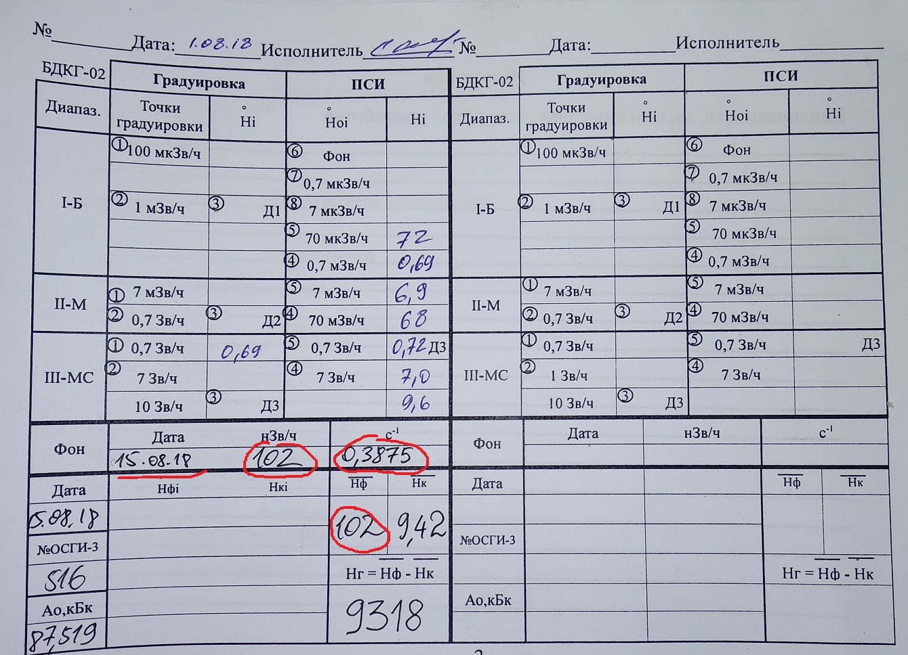
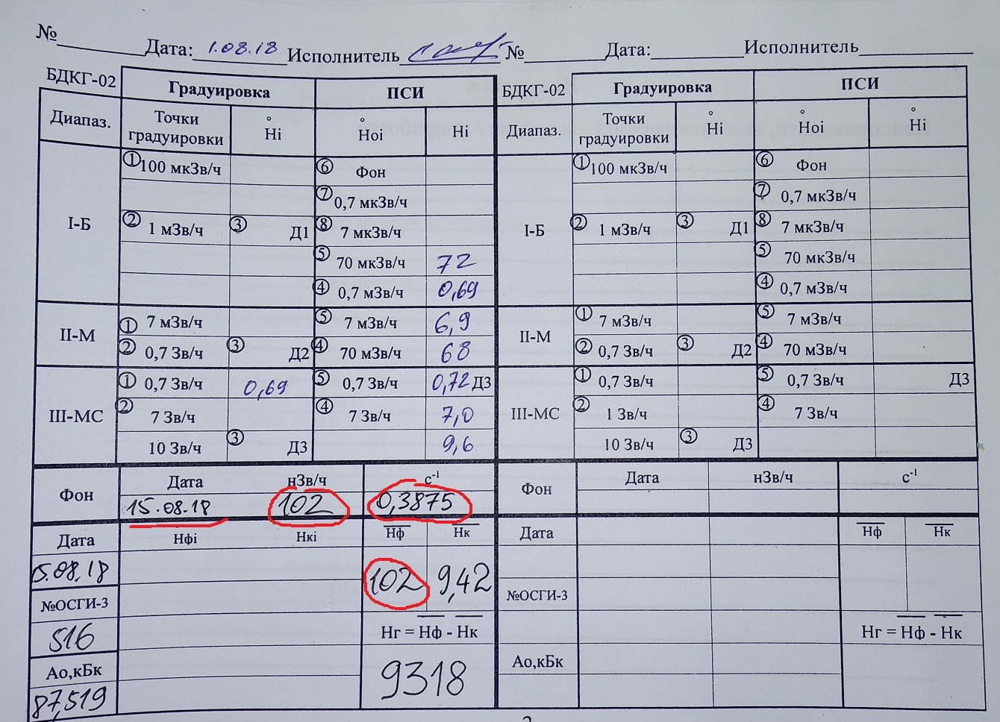

БДКГ-02. Калибровка фона и градуировочное число
Запустить SARKtech, выбрать пункт "Автокалибровка" (потребуется ввод пароля)

Обязательно поставить флажок "Калибровка фона"
, иначе слетит к чертям вся калибровка (придется заново отдавать блок на линейку)
- Выставить фон ("Эталонные точки") — 100
- Необходимый уровень погрешности — 5
- Максимальное отклонение — 5
- Нажать Старт
 Дождаться, когда напротив подключенного адреса появится надпись "Завершено". Блок можно отключать.
Дождаться, когда напротив подключенного адреса появится надпись "Завершено". Блок можно отключать.
 Значение "Фон" и "Точка 1" записать в паспорт настройки

Если блоков несколько, то, чтобы не терять время, следует подключать сразу несколько (с помощью "паука" до 9-и
штук, разумеется, все блоки должны быть с разными адресами)
Значение "Фон" и "Точка 1" записать в паспорт настройки

Если блоков несколько, то, чтобы не терять время, следует подключать сразу несколько (с помощью "паука" до 9-и
штук, разумеется, все блоки должны быть с разными адресами)
После завершения калибровки подключить блок к SARKtech, разместить источник на БД на средней отметке,
выбрать вкладку "Монитор" и, дождавшись статической погрешности 1-3% записать значение "Мощности дозы" в паспорт
настройки.
 Также в паспорт записывается номер источника и его активность
Также в паспорт записывается номер источника и его активность

Далее вычисляется градуировочное число. Вот как это делается: значение мощности дозы (Нк) умножается на 1000 и
из полученного числа вычитается значение фона (Нф), например: 9,42 * 1000 - 102 = 9318.
Полученное значение записать в паспорт настройки: